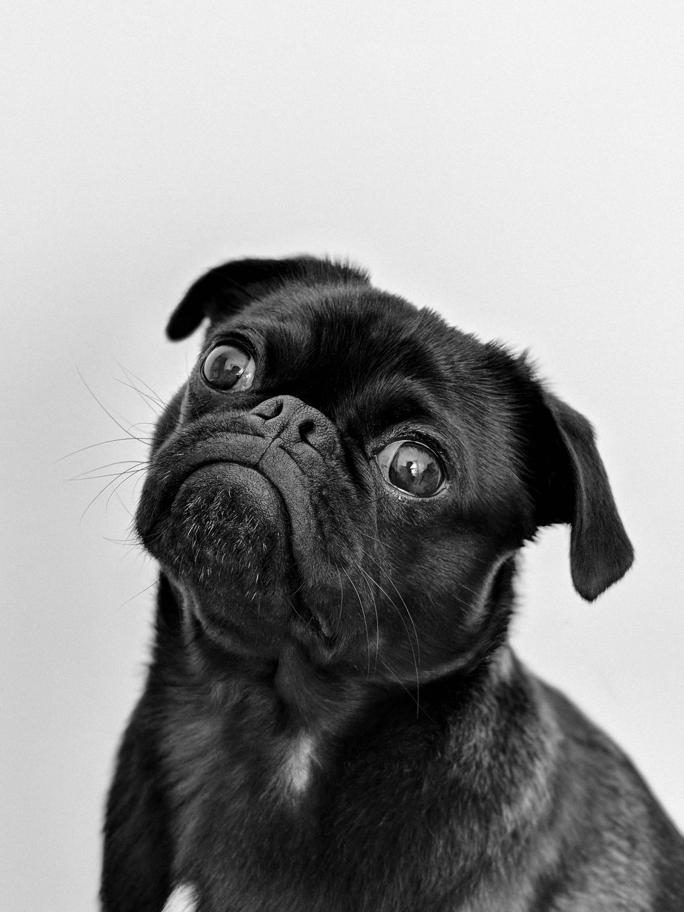

What a pug-nificent day!
Pugs have wrinkled faces because Chinese breeders purposely bred them that way.



The most popular theory about the breed’s name is that it came from marmoset monkeys, which were also known as Pug monkeys. Marmosets were popular pets in the early 1700s, and their faces look very similar to the faces of Pug dogs.